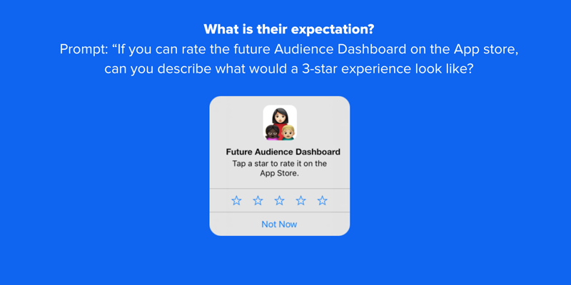
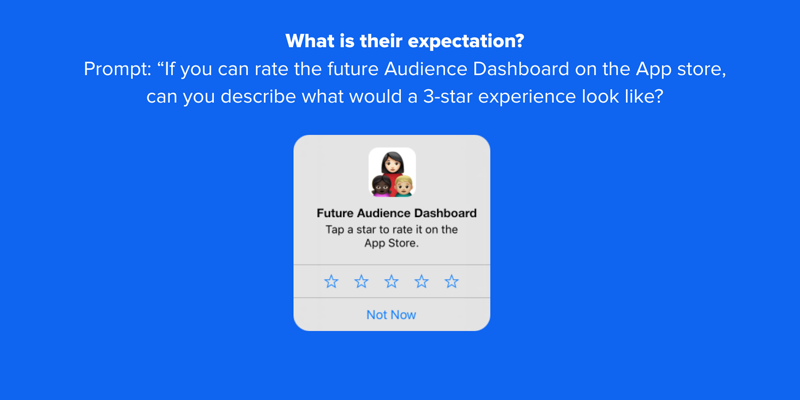
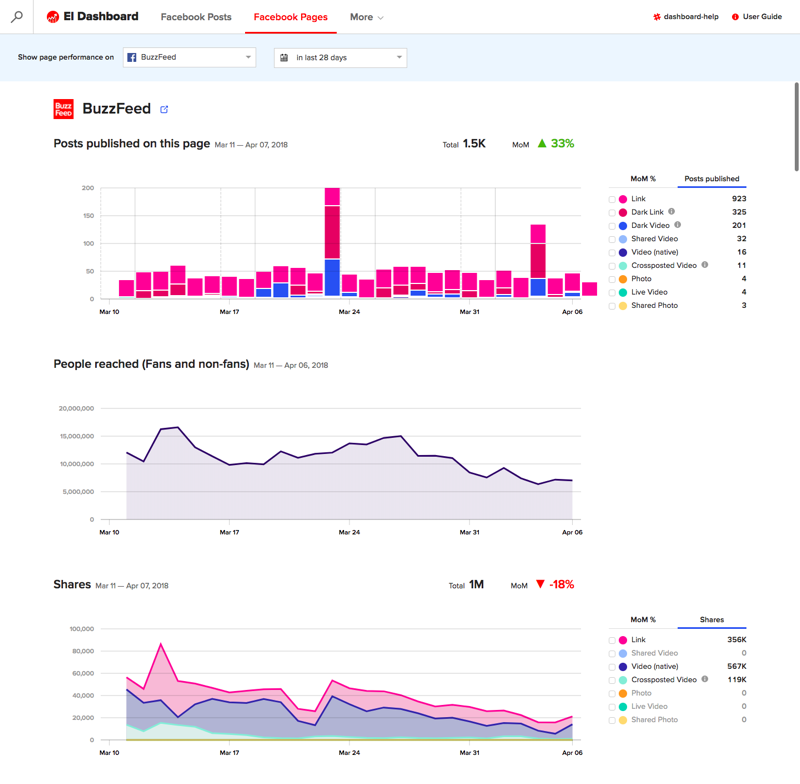

BuzzFeed’s El Dashboard Suite
Empower the organization to make data-driven decisions with a suite of analytic tools
Role: Product design & product management

BuzzFeed’s El Dashboard Suite
Empower the organization to make data-driven decisions with a suite of analytic tools
Situation
BuzzFeed creates and publishes over 600+ videos, posts, and graphics a week to our owned & operated properties and many social platforms like Facebook or Snapchat. We get data back about how our content connects with our audiences from metrics like pageviews, shares, and minutes watched. The knowledge held in those data helps us to understand what resonates with our audiences, and as a result, powers the feedback loop ( Iterate ➝ Publish ➝ Learn ) for our content creators to make better, more engaging content.

Opportunity
Data plays an integral role in our editorial and advertising strategy. My team Reporting Tools was formed 2 years ago and tasked with this mission:
Empower the organization to make data-driven decisions with a suite of analytic tools that are focused and adaptable to meet our editorial and business needs.
My role
I lead design for 11 dashboards and features in the tool suite. As one of the 3 leads for the Reporting Tools team, I partner closely with the engineering and data science lead to define the product strategy, roadmap and KPIs. For the last 12 months, I also lead the product and ship the audience x content dashboard, video translation reporting, Facebook platform monitoring feature, and user preference workflow.
Although the user problems aren’t always the same, the process for each project generally goes this:
Define ⟶ Explore ⟶ Refine ⟶ Promote & onboard ⟶ Learn & Reflect
1 Define the problems by deeply understanding the user problems and business goals. The methodology and tools for this step include user/stakeholder interview, workflow/product audit, design sprint workshop, worksheets, thought exercises and journey mapping.
 



2 Explore the solutions in a broad spectrum to examine their viability, feasibility, and usability. With data products, I prefer to build prototypes with real data to minimize speculative risks, suss out unforeseen uses cases and get genuine feedback from our users. I use a mix of static (paper mocks, click-through screens) and live prototypes (live code, spreadsheet, 3rd party products.)


3 Refine the design to achieve the most effective solution. We hone in on the details like UI design, interaction and affordance to make the information and interface are intuitive and easy to the users.
To ensure our tools can grow gracefully, I establish a design system for the dashboard suites which includes the UI architecture, UI pattern, graph components and accessibility-friendly palettes.


4 After shipping, we promote and onboard the new product or feature to our users in 3 ways: in-app promotion (onboarding modal and promotional units), in-context announcement (Email and flyers) and in-person demo session. For our users in different time zones, we create thorough documentation like user guides, cheatsheets, and FAQs to help them get acquired with our tools on their own.


5 Learn and reflect based on data and feedback from users. We closely monitor the usage and collect users feedback to get improvement ideas for the future iteration. The whole team would gather for a retrospective to reflect on how the project went and identified the actions for improvement going forward.
The user problems have evolved quite a bit in the last 2 years. Let’s start from the beginning.
Situation
The demand for data was higher than ever, however accessing data is a tedious process. There was no easy way to get data to answer simple questions. Users spent more time on cobbling stats from multiple sources than making data analysis. Our data analysts were drowned by requests from different parts of the company and unable to keep up the demand. Because of the high friction to get data, many people simply gave up or resorted to a subjective way to set goals and make decisions.
Objective
Making the essential datasets accessible in an easy-to-use, well-organized tool.
Solution
We started with building the content insights dashboard that surfaces key metrics for a post, video, and graphics on a specific platform. The table-based dashboard helps users to explore the large dataset using a set of robust filters, search and sorting features, so they can get answers to a simple question like “What are the most popular videos about Béyonce we have ever made?”

The list view is a table of content based on the selected parameters such as time range, platform, location, creators, content type, language, etc.

The detail view is a "deep-dive" into a piece of content with granular metrics.
üôÖ Failed first attempt The first dashboard we built was based on the assumption that a one-size-fill-all product would satisfy everyone‚Äôs need. The generalized dashboard was too confusing for non-data savvy folks and too simplistic for power users. The unclear use case along with the unforeseen engineering challenge forced us to kill the dashboard shortly after its completion. Since then, our team learned to be critical of product decisions and evaluated every project by the user impact and team effort before design and development.

Situation
As getting data about a piece of content became easier, our users started to ask what insights are noteworthy and actionable. Are 100K shares for a food video decent or exceptional compared to historical data? Which content shows an early sign of going viral? Should we translate this popular video to different languages to promote on the various market? Our users were looking for "signals" that helped to guide their creation and distribution strategy and optimized for success.
Objective
Surface noteworthy insights in real-time about outstanding and trending content to help our editorial team to capitalize their success further.
Solution
We created several features and products that highlight exceptional and trending content in a strong visual way:

The 99 badges are reward icons given to content that broke high benchmarks. They are a key identifier of success that is implemented across different notifications and dashboards.

Trending Videos Dashboard is a visual hall-of-fame for videos that have the highest velocity in shares and views. The treemap helps users to grasp the fastest growing content based on the size of the image.
Situation
Most of the exceptional content and viral hits are the results of content experimentation. However, discovering and tracking a group of content based on a topic, tag or intent remained very difficult. The editorial leads often resorted to a manual process to log the data into a spreadsheet and aggregate the result.
Objective
Facilitate the content ideation and experimentation process by providing toolings to make tagging, searching and learning about a grouping of content easier.
Solution
We developed a few tools to help users to ideate and track content experiment through content discovery (Search), custom tagging (Experiment Tool) and content intent analysis. (Cultural Cartography)

Search is a content discovery tool for the BuzzFeed catalog of 3.5+ millions of videos, graphics and posts.

Experiment Tool is a workflow tool for creating and applying custom tags to a group of content.

Cultural Cartography visualization is an experimental project that groups content based on intent or "job-to-be-done".

Job chrome-extension allows the content creator to tag any content in the browser.
Situation
The content consumption of our users and the distributed platforms are constantly evolving. Our editorial leads had a hard time tracking the overall health and long-term trends of our core distribution platforms, like BuzzFeed’s owned and operated and Facebook. They want to be able to monitor our content outputs against the key metrics so they can adapt to platform changes and adjust content strategy accordingly.
Objective
Help our editorial management to monitor the health of the core distribution platforms by tracking the output and performance trends over time.
Solution
We developed a health dashboard for Facebook and Owned & operated, the two main distribution platforms. The dashboard consists of multiple time-series graphs that show content output and the key metrics side-by-side. All key metrics have a strong correlation with each other where a change in one metric could reveal a change in another. One of the novels features in all health dashboard is pinning. It let users click and pin any date across all graphs so the user can compare the changes of those metrics across the same point in time.

While those big initiatives were happening, our team was also gradually expanding the dashboard suite by increasing our data coverage for the entire organization. Today, the dashboard suite, known as El Dashboard, has grown into a suite of 13 dashboards under four categories of tools: Content insights, Signal, Discovery & Experiment, and Platform Health.


Role: Design Lead & product manager. Team: 5 engineers, 4 data scientists, 1 product manager, 1 product support.